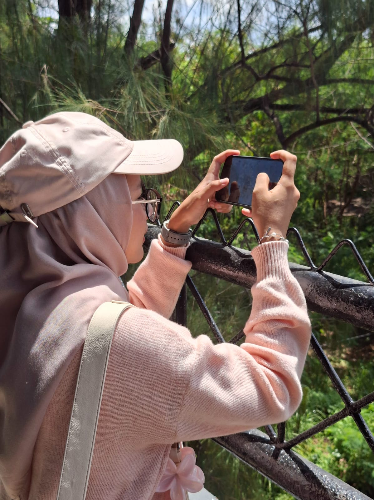
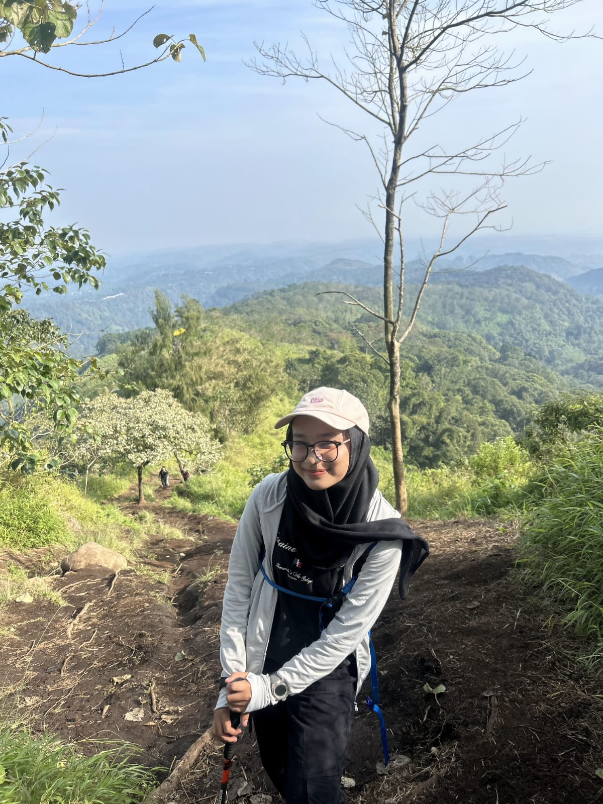
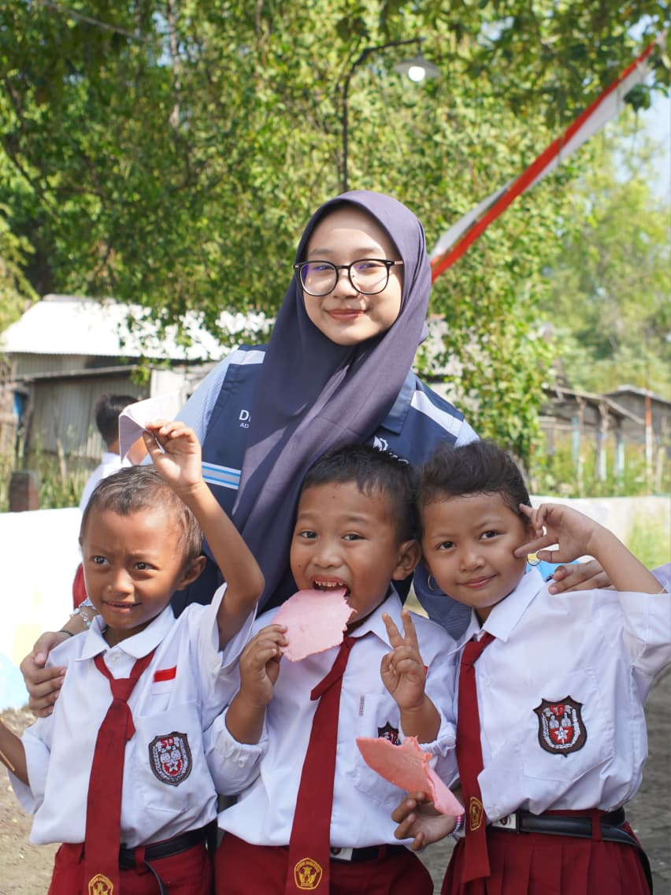
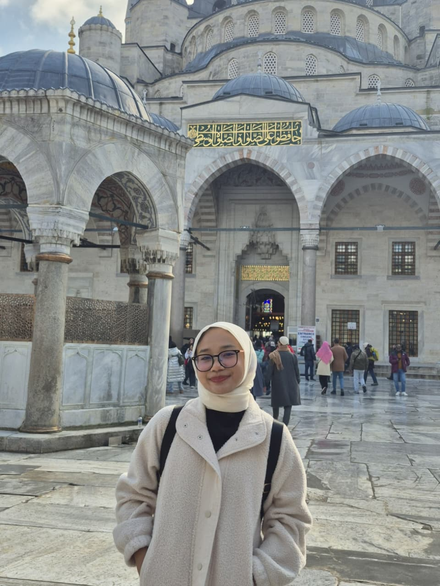

Hello, I’m Devina!
I was born and raised in Surabaya, the vibrant City of Heroes. Growing up in this city filled with history, resilience, and warmth has shaped the way I see culture and community. And now, I’m also going to college in this city, specifically at Sepuluh Nopember Institute of Technology.
I love travelling — not only exploring cityscapes but also immersing myself in nature, such as hiking mountains. I also enjoy participating in volunteering programs and, of course, capturing every precious moment along the way.




As an Informatics student, I am currently interested in the fields of data and network, exploring how technology can connect people and transform information into meaningful insights.